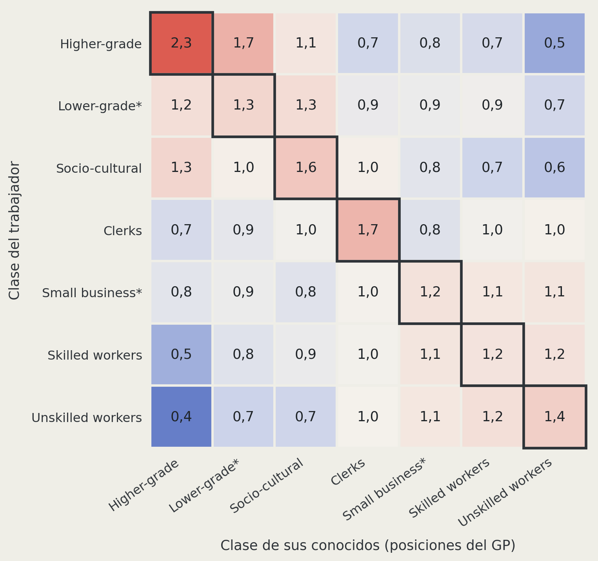

Trajan Pirkovic Palma¹ ²
¹ Instituto de Sociología, Pontificia Universidad Católica de Chile
² Fondecyt: Class, personal networks and political attitudes
Profesora Guía: Andrea Canales Hernández
Profesor Co-Tutor: Gabriel Otero Cabrol
Presentación de avances de tesis · 7 de octubre de 2026
| 1 | Problema de investigación | ¿Qué sabemos de las fronteras en las redes y qué falta saber? |
| 2 | Problema teórico | ¿Por qué las habilidades podrían ser una frontera, y cómo reconocerla? |
| 3 | Propósito, pregunta, objetivos e hipótesis | ¿Qué se estudia y qué se espera encontrar? |
| 4 | Datos y métodos | ¿Cómo se miden habilidades, estatus y clase en las redes? |
| 5 | Descriptivos | ¿Cómo varían las similitudes y la homogeneidad de clase según clase y nivel educativo? |
| 6 | Resultados preliminares | ¿Se asocia la similitud de habilidades con la homogeneidad de clase? |
Chile es muy desigual en ingresos, y esa desigualdad también se observa en con quién se relaciona la gente.
Ingresos
0,47
coeficiente de Gini del ingreso monetario de los hogares (Ministerio de Desarrollo Social y Familia, 2023)
8,2 veces
el ingreso del 20% de hogares de mayores ingresos frente al 20% de menores ingresos (Casen 2022)
Es el registro más bajo de la serie y aun así es alto. Con datos tributarios, Chile figura entre los países más desiguales de la OCDE y de América Latina (Flores et al., 2020), y la desigualdad persiste entre generaciones, sobre todo en la parte alta (Torche, 2014).
Relaciones
Si las redes reproducen la desigualdad, importa saber qué las separa.
Las fronteras de las redes se han medido en una sola dirección: arriba y abajo.
Frontera: patrón de relaciones con muchos lazos dentro de un grupo y pocos hacia fuera. La similitud favorece el vínculo y así dibuja fronteras en las redes (McPherson, Smith-Lovin y Cook, 2001).
Chile
Las redes de conocidos se ordenan por cercanía de prestigio ocupacional, más allá del tamaño de cada grupo (Espinosa-Rada, Bargsted y Ortiz Ruiz, 2026)
Literatura internacional
El capital social se organiza en dos ejes: volumen de contactos y conexión con posiciones de estatus alto o bajo (Alecu et al., 2022)
Clase
La homogeneidad de clase de las redes se mide con un índice que combina educación, ocupación e ingreso (Otero, Völker y Rözer, 2021)
Las tres ordenan a las personas en una escala vertical: quién está más arriba o más abajo.
Una escala vertical trata como equivalentes a quienes están a la misma altura.
Dos ocupaciones a la misma altura pueden pertenecer a mundos de trabajo distintos.
Ocupación A
Electricista · ISEI 43 · Skilled workers
Trabaja con cosas y entorno físico: 83% de las categorías de habilidades de su perfil son técnico-materiales.
Ocupación B
Secretario · ISEI 42 · Clerks
Trabaja con símbolos e información: 55% de las categorías de habilidades de su perfil son analítico-simbólicas.
Una escala de estatus los trata como equivalentes; el esquema de Oesch ya los separa en clases distintas por su lógica de trabajo. La diferencia aparece incluso dentro de una misma clase: gerentes (ISEI 70) e ingenieros (72), ambos Higher-grade, tienen perfiles distintos (53% gestión y cuidado; 58% analítico-simbólico).
Falta saber si las redes también se separan por mundos de trabajo entre personas de estatus parecido.
Perfiles de habilidades ESCO de las posiciones del generador de posiciones; detalle en datos y métodos.
Idea 1 de 4
El contenido del trabajo no es solo un rasgo individual: estructura posiciones de clase.
Wright (2005)
Las habilidades y credenciales escasas son un activo: configuran posiciones privilegiadas dentro de las relaciones de clase.
Oesch (2006)
La clase combina nivel de calificación y lógica de trabajo: técnica, organizacional e interpersonal. El contenido del trabajo ya es criterio de clase.
Alabdulkareem et al. (2018) y ESCO
Las habilidades forman comunidades separadas en el espacio ocupacional, y se pueden medir ocupación por ocupación (Comisión Europea, s. f.).
Oesch usa el contenido del trabajo como criterio individual de clase. La tesis lo lleva al plano relacional.
Si las habilidades definen posiciones, ¿pueden también trazar fronteras entre personas?
Idea 2 de 4
Toda posición social puede volverse base de cierre: separar a unos de otros y, a veces, acaparar ventajas.
Cierre social: los grupos restringen el acceso a recursos y oportunidades a un círculo de elegibles (Weber, 1978; Parkin, 1979). Las desigualdades persistentes surgen de relaciones que acaparan oportunidades (Tilly, 1998; Tomaskovic-Devey y Avent-Holt, 2019).
Nivel educativo
Las credenciales son el canal formal de cierre: definen quién puede acceder a ciertas ocupaciones (Parkin, 1979; Weeden, 2002).
Similitud de estatus
Cercanía en la jerarquía ocupacional, medida con el estatus socioeconómico ocupacional (ISEI; Ganzeboom et al., 1992). Es la dimensión más estudiada en redes.
Similitud de habilidades
Cercanía en el contenido del trabajo. Las ocupaciones son el lugar donde opera el cierre (Weeden y Grusky, 2005). Es la dimensión que propone la tesis.
Tres dimensiones al mismo nivel: ninguna es la que hay que superar. ¿Dónde se vuelve observable el cierre?
Idea 3 de 4
Las redes son donde el cierre se vuelve observable, pero también pueden ser lo contrario: puentes.
Las redes canalizan información, recomendaciones y oportunidades (Lin, 2001), y pueden ampliar o reducir la desigualdad según cómo se distribuyen los contactos (DiMaggio y Garip, 2012). Una frontera por habilidades debería verse en redes parecidas en habilidades. Esa similitud admite tres lecturas:
| Lectura | Qué predice | Antecedentes |
|---|---|---|
| Cierre | La red parecida protege oportunidades: más ingreso | Weber (1978); Parkin (1979); Weeden (2002) |
| Apertura | La red parecida es redundante; la información nueva llega por contactos distintos: menos ingreso | Granovetter (1973); Burt (1992); Lin (2001) |
| Segmentación | La red separa mundos de trabajo: sin diferencia de ingreso | Expectativa nula |
Separar o acaparar: lo examina OE3. Pero antes, ¿una red parecida es siempre frontera?
Idea 4 de 4
Parte de con quién se relaciona la gente depende solo de con quién es posible encontrarse.
Estructura. Las oportunidades de encuentro dependen del tamaño y la distribución de los grupos (Blau, 1977) y de los espacios que se comparten: trabajo, barrio, familia (Feld, 1981). La homofilia observada combina esa estructura (homofilia de base) y lo que la excede (homofilia de exceso) (McPherson et al., 2001; Kossinets y Watts, 2009).
Un ejemplo. Pedro, electricista, va a una fiesta donde la mitad son mecánicos: los conoce sin buscarlos. Eso es estructura. Si conoce más mecánicos de los que la fiesta le ofrece, hay algo más.
En esta tesis. Las clases agrupan ocupaciones con contenido de trabajo parecido. Quien conoce más gente de su clase tiene, por eso mismo, una red más parecida en habilidades: homogeneidad de clase y similitud de habilidades se mueven juntas por construcción.
Frontera o estructura: lo examina OE2. Sin descontar la estructura, se confunde composición con cierre.
1 Habilidades que definen posiciones · 2 Posiciones que se vuelven fronteras · 3 Fronteras visibles en redes · 4 Redes que reflejan estructura
1 y 2 · la pregunta
Si las habilidades definen posiciones y toda posición puede volverse frontera, ¿son las habilidades una dimensión del cierre, junto al estatus y las credenciales?
3 · la prueba y una tensión
El cierre debería verse en redes parecidas en habilidades. Pero cierre y apertura predicen lo contrario para el ingreso.
4 · la corrección
Antes de leer una red parecida como frontera, hay que descontar lo que produce la estructura de oportunidades de encuentro.
Síntesis. Una frontera puede separar mundos sin concentrar ventajas (segmentación horizontal) o separar y concentrar ventajas (cierre vertical).
¿Dónde se ubican las habilidades, frente al estatus y la educación?
Si las habilidades definen posiciones, pueden volverse fronteras visibles en las redes, siempre que se distinga la frontera de la estructura. La tesis pregunta qué tipo de frontera son.
Examinar si la similitud de habilidades laborales es una dimensión del cierre social en las redes personales, distinta del estatus ocupacional y de las credenciales educativas.
Aportes
¿Cómo interactúan el nivel educativo de los trabajadores y su similitud de habilidades laborales y de estatus con sus conocidos al asociarse con la homogeneidad de clase de sus redes y con su ingreso laboral, en la Región Metropolitana en 2025?
Objetivo general. Analizar cómo interactúan el nivel educativo de los trabajadores y su similitud de habilidades laborales y de estatus con sus conocidos al asociarse con la homogeneidad de clase de sus redes y con su ingreso laboral, en la Región Metropolitana en 2025.
| Objetivo específico | |
|---|---|
| OE1 | Describir la similitud de habilidades laborales y de estatus entre los trabajadores de la Región Metropolitana y sus conocidos en 2025 |
| OE2 | Estimar la asociación de la similitud de habilidades laborales y de estatus con la homogeneidad de clase de las redes de los trabajadores de la Región Metropolitana en 2025, según su nivel educativo |
| OE3 | Examinar la asociación entre la similitud de habilidades laborales con sus conocidos y el ingreso laboral de los trabajadores ocupados de la Región Metropolitana en 2025, a igual nivel educativo, estatus ocupacional y clase, y su variación según la similitud de estatus y el estatus ocupacional |
OE2 · trabajadores de la Región Metropolitana
| Enunciado | Fundamento | |
|---|---|---|
| H1 | A mayor similitud de habilidades laborales con sus conocidos, mayor homogeneidad de clase de sus redes, a igual similitud de estatus | Las habilidades como base de clase y las ocupaciones como lugar de cierre (Wright, 2005; Oesch, 2006; Weeden y Grusky, 2005) |
| Descomposición de H1 | Qué parte de la asociación de la similitud de habilidades y de estatus con la homogeneidad de clase excede la que produce la disponibilidad de ocupaciones (análisis, no hipótesis) | Homofilia de base y de exceso (McPherson et al., 2001; Feld, 1981; Kossinets y Watts, 2009) |
| H2 | La asociación entre la similitud de habilidades laborales y la homogeneidad de clase es mayor en quienes tienen menor nivel educativo | Las credenciales como canal formal de cierre; sin ellas, el oficio compartido sería la base principal de la frontera (Parkin, 1979; Weeden, 2002) |
OE3 · trabajadores ocupados de la Región Metropolitana
| Enunciado | Fundamento | |
|---|---|---|
| H3 | A mayor similitud de habilidades laborales con sus conocidos, mayor ingreso laboral, a igual nivel educativo, estatus ocupacional y clase | Cierre: las fronteras protegen oportunidades (Weber, 1978; Parkin, 1979; Weeden, 2002). Rival, apertura: la red parecida es redundante (Granovetter, 1973; Burt, 1992; Lin, 2001) |
| H3a | La asociación entre la similitud de habilidades laborales y el ingreso laboral es mayor cuanto mayor es la similitud de estatus con sus conocidos | Las fronteras se refuerzan cuando las dimensiones de diferenciación coinciden (Blau, 1977) |
| H3b | La asociación entre la similitud de habilidades laborales y el ingreso laboral es mayor en quienes tienen estatus ocupacional alto que en quienes tienen estatus medio o bajo | La homogeneidad de las redes expresa preservación de recursos arriba y exclusión abajo (Otero, Völker y Rözer, 2021) |
“¿Puede indicarme, aunque sea en términos aproximados, cuántas personas que usted conoce son…?”
Se pregunta por 27 ocupaciones. Los conocidos pueden ser familiares, amigos u otras personas con las que se podría conversar al encontrarlas en la calle o en un centro comercial.
Datos
Encuesta Fondecyt Class, Personal Networks and Political Attitudes, Región Metropolitana, 2025. Generador de posiciones (Lin y Dumin, 1986). Clase: esquema de Oesch (2006) en siete clases. Estimaciones con ponderador muestral.
Muestras
971 trabajadores y 30.207 menciones en los modelos de homogeneidad de clase; incluye 189 no ocupados, con la clase de su última ocupación. 767 ocupados con ingreso laboral en el modelo de ingreso.
Ocupación
Código ISCO-08 de cada posición del GP y de cada trabajador (OIT, 2012)
Perfil de habilidades
Habilidades esenciales que ESCO asigna a esa ocupación (Comisión Europea, s. f.)
Red de 112 categorías
Unidas si aparecen juntas en las ocupaciones más que por azar (φ; Alabdulkareem et al., 2018)
Cuatro comunidades
Detectadas con el algoritmo de Leiden (Traag et al., 2019); modularidad 0,388
| Comunidad | Objeto del trabajo | Ejemplos del GP |
|---|---|---|
| Técnico-material | Cosas y entorno físico | Obreros 89%, electricistas 83% |
| Gestión y cuidado | Personas: coordinar y atender | Profesores de básica y media 77%, abogados 64% |
| Analítico-simbólico | Símbolos e información | Ingenieros 58%, secretarios 55% |
| Bio-ambiental-legal | Seres vivos, ambiente y derecho | No predomina en ninguna posición; aparece de ISEI 16 a 85 |
Cada ocupación es una mezcla: su perfil de habilidades se reparte entre las cuatro comunidades.
● Técnico-material ● Gestión y cuidado ● Analítico-simbólico ● Bio-ambiental-legal · cada punto = 5% de las categorías de habilidades del perfil
| Ocupación | ISEI | Clase | Habilidades |
|---|---|---|---|
| Médicos | 89 | Socio-cultural | ●●●●●●●●●●●●●●●●●●●● |
| Abogados | 85 | Higher-grade | ●●●●●●●●●●●●●●●●●●●● |
| Profesores universitarios | 76 | Socio-cultural | ●●●●●●●●●●●●●●●●●●●● |
| Ingenieros | 72 | Higher-grade | ●●●●●●●●●●●●●●●●●●●● |
| Arquitectos | 71 | Higher-grade | ●●●●●●●●●●●●●●●●●●●● |
| Gerentes de grandes empresas | 70 | Higher-grade | ●●●●●●●●●●●●●●●●●●●● |
| Altos funcionarios del gobierno | 70 | Higher-grade | ●●●●●●●●●●●●●●●●●●●● |
| Profesores de básica o media | 63 | Socio-cultural | ●●●●●●●●●●●●●●●●●●●● |
| Trabajadores sociales | 59 | Socio-cultural | ●●●●●●●●●●●●●●●●●●●● |
| Carabineros y policías | 53 | Skilled workers | ●●●●●●●●●●●●●●●●●●●● |
| Enfermeros o TENS | 48 | Socio-cultural | ●●●●●●●●●●●●●●●●●●●● |
| Parvularios | 47 | Socio-cultural | ●●●●●●●●●●●●●●●●●●●● |
| Contadores | 47 | Lower-grade* | ●●●●●●●●●●●●●●●●●●●● |
| Comerciantes y dueños de locales | 45 | Small business* | ●●●●●●●●●●●●●●●●●●●● |
| Ocupación | ISEI | Clase | Habilidades |
|---|---|---|---|
| Electricistas | 43 | Skilled workers | ●●●●●●●●●●●●●●●●●●●● |
| Secretarios | 42 | Clerks | ●●●●●●●●●●●●●●●●●●●● |
| Mecánicos de autos | 38 | Skilled workers | ●●●●●●●●●●●●●●●●●●●● |
| Conductores de camiones | 36 | Skilled workers | ●●●●●●●●●●●●●●●●●●●● |
| Vendedores de tiendas | 31 | Skilled workers | ●●●●●●●●●●●●●●●●●●●● |
| Cajeros | 31 | Clerks | ●●●●●●●●●●●●●●●●●●●● |
| Repartidores de aplicaciones | 30 | Clerks | ●●●●●●●●●●●●●●●●●●●● |
| Guardias de seguridad | 27 | Unskilled workers | ●●●●●●●●●●●●●●●●●●●● |
| Cocineros | 27 | Skilled workers | ●●●●●●●●●●●●●●●●●●●● |
| Vendedores ambulantes | 26 | Unskilled workers | ●●●●●●●●●●●●●●●●●●●● |
| Obreros de construcción o fábricas | 24 | Unskilled workers | ●●●●●●●●●●●●●●●●●●●● |
| Trabajadores agrícolas | 16 | Unskilled workers | ●●●●●●●●●●●●●●●●●●●● |
| Aseadores | 16 | Unskilled workers | ●●●●●●●●●●●●●●●●●●●● |
Ordenadas por ISEI-08. Clase Oesch7. * Clase con una sola posición en el GP. Enfermeros o TENS: perfil del código 5321, porque 3221 no tiene ocupaciones en ESCO. Cinco códigos agregados usan el grupo unitario más frecuente en Casen RM.
Estatus parecido, contenido distinto: electricistas (43) y secretarios (42); gerentes (70) e ingenieros (72).
| Persona | Conoce a | Similitud de habilidades | Similitud de estatus | Homogeneidad de clase |
|---|---|---|---|---|
| Pedro, electricista (Skilled workers, ISEI 43) | Mecánicos, camioneros, cocineros | ●●● alta | ●●● alta | 100% |
| Rosa, obrera de construcción (Unskilled workers, ISEI 24) | Electricistas, mecánicos | ●●● alta | ●●○ media | 0% |
| Carla, abogada (Higher-grade, ISEI 85) | Médicos, profesores universitarios | ●○○ baja | ●●● alta | 0% |
| Sofía, ingeniera (Higher-grade, ISEI 72) | Gerentes, altos funcionarios | ●○○ baja | ●●● alta | 100% |
Niveles ilustrativos, según la comunidad predominante y el ISEI de cada ocupación (lámina anterior). Clases e ISEI reales del GP.
Las tres medidas pueden ir juntas (Pedro) o separarse (Rosa, Carla, Sofía).
| Herramienta | Variable dependiente | Variable principal | N | Estado | |
|---|---|---|---|---|---|
| OE1 | Descriptivos ponderados; Modelos A y B (respaldo) | Similitudes y composición de habilidades de la red | Clase y nivel educativo | 971 | Estimado |
| H1 | Modelos C1 y C2: logit fraccional | Homogeneidad de clase (proporción) | Similitud de habilidades; en C2 se agrega similitud de estatus | 971 | Estimado |
| Descomposición de H1 | Análisis complementario | Coeficientes de C1 y C2 | 971 | En desarrollo | |
| H2 | C2 + similitud de habilidades × nivel educativo | Homogeneidad de clase (proporción) | Similitud de habilidades | 971 | Pendiente |
| H3 | Modelo D: regresión lineal por bloques | Logaritmo del ingreso laboral | Similitud de habilidades | 767 | Estimado |
| H3a | Modelo Da: D + similitud de habilidades × similitud de estatus | Logaritmo del ingreso laboral | Similitud de habilidades | 767 | Pendiente |
| H3b | Modelo Db: D + similitud de habilidades × estatus en tramos | Logaritmo del ingreso laboral | Similitud de habilidades | 767 | Pendiente |
Todos con ponderador muestral (svyglm). Controles en los modelos de red: sexo, edad, nivel educativo (cinco niveles), ingreso y número de conocidos; en H1 y H2, además, clase del trabajador.
Diseño muestral provisional: pesos sin estratos ni conglomerados.
| Clase | Trabajadores | Posiciones en el GP | Conocidos (media) | Similitud de habilidades (DE) | Distancia de estatus (puntos ISEI) | Homogeneidad de clase (%) |
|---|---|---|---|---|---|---|
| Higher-grade | 96 | 5 | 40,7 | 0,13 | 19,9 | 30,3 |
| Lower-grade* | 80 | 1 | 37,0 | −0,32 | 17,4 | 3,9 |
| Socio-cultural | 111 | 6 | 44,4 | 0,63 | 19,1 | 39,2 |
| Clerks | 94 | 3 | 29,8 | −0,19 | 14,0 | 17,5 |
| Small business* | 138 | 1 | 38,7 | −0,33 | 15,8 | 6,8 |
| Skilled workers | 192 | 6 | 28,0 | 0,05 | 14,1 | 29,9 |
| Unskilled workers | 260 | 5 | 25,7 | 0,02 | 15,5 | 38,4 |
| Total | 971 | 27 | 33,0 | 0,00 | 16,1 | 26,5 |
Medias ponderadas. Similitud de habilidades: 0 = promedio de la muestra. Distancia de estatus: más distancia, menos similitud de estatus. * Una sola posición en el GP (contadores; comerciantes).
Similitudes distintas: correlación de 0,23 entre ambas, y de 0,08 entre similitud de habilidades e ISEI del trabajador.
Socio-cultural tiene las redes más parecidas en habilidades; Higher-grade y Socio-cultural, las más lejanas en estatus.
| Nivel educativo | Trabajadores | Similitud de habilidades (DE) | Distancia de estatus (puntos ISEI) | Homogeneidad de clase (%) |
|---|---|---|---|---|
| Básica o menos | 79 | 0,11 | 15,2 | 35,0 |
| Media incompleta | 90 | −0,05 | 14,1 | 28,7 |
| Media completa | 371 | −0,19 | 14,3 | 26,6 |
| Técnica superior | 165 | 0,03 | 16,8 | 19,8 |
| Universitaria | 266 | 0,23 | 19,2 | 26,6 |
Medias ponderadas, sin controles.
Homogeneidad de clase baja de 35% (básica o menos) a 20% (técnica superior) y sube a 27% en universitaria. Distancia de estatus mayor con educación superior. Similitud de habilidades en forma de U.
Antesala de H2: ¿la asociación entre similitud de habilidades y homogeneidad de clase varía según nivel educativo?
H1. A mayor similitud de habilidades laborales con sus conocidos, mayor homogeneidad de clase de sus redes, a igual similitud de estatus.
\[\operatorname{logit} E(\text{Homogeneidad}_i) = \beta_0 + \beta_1\, SH_i\;(+\ \beta_2\, SP_i) + \text{clase}_i + \gamma' X_i\]
| C1 | C2 | |
|---|---|---|
| Similitud de habilidades (1 DE) | 0,378*** (0,044) | 0,279*** (0,042) |
| Similitud de estatus (1 DE) | 0,433*** (0,047) | |
| Clase y controles | sí | sí |
| Pseudo-R² | 0,489 | 0,563 |
Logit fraccional ponderado, N = 971. Error estándar entre paréntesis. Solo clase y controles: pseudo-R² 0,41.
En puntos porcentuales de homogeneidad (por 1 DE)
| C1 | C2 | |
|---|---|---|
| Similitud de habilidades | +6,5 pp | +4,7 pp |
| Similitud de estatus | +7,3 pp |
Atenuación al agregar similitud de estatus: 0,378 → 0,279 (26%). Mismo patrón en cuatro chequeos de robustez (respaldo).
Dos electricistas con igual clase, educación, ingreso y 16 conocidos: si la red de uno es 1 DE más parecida a él en habilidades, se espera 6,5 pp más de homogeneidad de clase, cerca de un conocido más de su clase; 4,7 pp a igual similitud de estatus.
Resultado preliminar consistente con H1. Falta distinguir qué parte viene de la estructura de ocupaciones.
Hasta ahora
Próximos pasos
Las habilidades se asocian con la homogeneidad de clase de las redes, más allá del estatus.
Pendiente: cuánto de esa asociación excede la estructura de ocupaciones y si se traduce en ventajas.
Alabdulkareem, A., Frank, M. R., Sun, L., AlShebli, B., Hidalgo, C., & Rahwan, I. (2018). Unpacking the polarization of workplace skills. Science Advances, 4(7), eaao6030. https://doi.org/10.1126/sciadv.aao6030
Alecu, A. I., Helland, H., Hjellbrekke, J., & Jarness, V. (2022). Who you know: The classed structure of social capital. The British Journal of Sociology, 73(3), 505–535. https://doi.org/10.1111/1468-4446.12945
Blau, P. M. (1977). Inequality and heterogeneity: A primitive theory of social structure. Free Press.
Burt, R. S. (1992). Structural holes: The social structure of competition. Harvard University Press.
Comisión Europea. (s. f.). ESCO: European Skills, Competences, Qualifications and Occupations. https://esco.ec.europa.eu
Contreras, D., Otero, G., Díaz, J. D., & Suárez, N. (2019). Inequality in social capital in Chile: Assessing the importance of network size and contacts’ occupational prestige on status attainment. Social Networks, 58, 59–77. https://doi.org/10.1016/j.socnet.2019.02.002
DiMaggio, P., & Garip, F. (2012). Network effects and social inequality. Annual Review of Sociology, 38, 93–118. https://doi.org/10.1146/annurev.soc.012809.102545
Espinosa-Rada, A., Bargsted, M., & Ortiz Ruiz, F. (2026). Socioeconomic homogeneity in acquaintance networks: Occupational prestige, education, and intergenerational mobility. Social Networks, 86, 342–353.
Feld, S. L. (1981). The focused organization of social ties. American Journal of Sociology, 86(5), 1015–1035.
Flores, I., Sanhueza, C., Atria, J., & Mayer, R. (2020). Top incomes in Chile: A historical perspective on income inequality, 1964–2017. Review of Income and Wealth, 66(4), 850–874. https://doi.org/10.1111/roiw.12441
Ganzeboom, H. B. G. (2010). A new International Socio-Economic Index (ISEI) of occupational status for the International Standard Classification of Occupation 2008 (ISCO-08) constructed with data from the ISSP 2002–2007 [Ponencia]. Annual Conference of the International Social Survey Programme, Lisboa.
Ganzeboom, H. B. G., De Graaf, P. M., & Treiman, D. J. (1992). A standard international socio-economic index of occupational status. Social Science Research, 21(1), 1–56.
Granovetter, M. S. (1973). The strength of weak ties. American Journal of Sociology, 78(6), 1360–1380.
Kossinets, G., & Watts, D. J. (2009). Origins of homophily in an evolving social network. American Journal of Sociology, 115(2), 405–450. https://doi.org/10.1086/599247
Lin, N. (2001). Social capital: A theory of social structure and action. Cambridge University Press.
Lin, N., & Dumin, M. (1986). Access to occupations through social ties. Social Networks, 8(4), 365–385.
Lindh, A., Andersson, A. B., & Volker, B. (2021). The missing link: Network influences on class divides in political attitudes. European Sociological Review, 37(5), 695–712. https://doi.org/10.1093/esr/jcab010
McPherson, M., Smith-Lovin, L., & Cook, J. M. (2001). Birds of a feather: Homophily in social networks. Annual Review of Sociology, 27, 415–444.
Ministerio de Desarrollo Social y Familia. (2023). Encuesta de Caracterización Socioeconómica Nacional (Casen) 2022: Ingresos de los hogares. Síntesis de resultados. Observatorio Social.
Oesch, D. (2006). Redrawing the class map: Stratification and institutions in Britain, Germany, Sweden and Switzerland. Palgrave Macmillan.
Organización Internacional del Trabajo. (2012). Clasificación Internacional Uniforme de Ocupaciones: CIUO-08. OIT.
Otero, G., Plaza, A., & Zavala-Aránguiz, I. (2026). Social mobility and class segregation in personal networks over time: Evidence from longitudinal data. Frontiers in Sociology, 11. https://doi.org/10.3389/fsoc.2026.1782127
Otero, G., Völker, B., & Rözer, J. (2021). Open but segregated? Class divisions and the network structure of social capital in Chile. Social Forces, 100(2), 649–679.
Parkin, F. (1979). Marxism and class theory: A bourgeois critique. Tavistock.
Tilly, C. (1998). Durable inequality. University of California Press.
Tomaskovic-Devey, D., & Avent-Holt, D. (2019). Relational inequalities: An organizational approach. Oxford University Press.
Torche, F. (2014). Intergenerational mobility and inequality: The Latin American case. Annual Review of Sociology, 40, 619–642. https://doi.org/10.1146/annurev-soc-071811-145521
Traag, V. A., Waltman, L., & van Eck, N. J. (2019). From Louvain to Leiden: Guaranteeing well-connected communities. Scientific Reports, 9, 5233.
Weber, M. (1978). Economy and society. University of California Press.
Weeden, K. A. (2002). Why do some occupations pay more than others? Social closure and earnings inequality in the United States. American Journal of Sociology, 108(1), 55–101. https://doi.org/10.1086/344121
Weeden, K. A., & Grusky, D. B. (2005). The case for a new class map. American Journal of Sociology, 111(1), 141–212. https://doi.org/10.1086/428815
Wright, E. O. (2005). Foundations of a neo-Marxist class analysis. En E. O. Wright (Ed.), Approaches to class analysis (pp. 4–30). Cambridge University Press.
\[SH_i = \frac{\sum_p n_{ip}\, SH_{ip}}{\sum_p n_{ip}} \qquad SP_i = \frac{\sum_p n_{ip}\, SP_{ip}}{\sum_p n_{ip}} \qquad \text{Homogeneidad}_i = \frac{\sum_p n_{ip}\, \mathbb{1}[\text{clase}_i = \text{clase}_p]}{\sum_p n_{ip}}\]
| Medida | Construcción | Lectura |
|---|---|---|
| Similitud de habilidades | Promedio de \(SH_{ip}\), ponderado por conocidos \(n_{ip}\). \(SH_{ip}\) es la distancia entre la ocupación del trabajador y la de la posición en la red de categorías de habilidades (pesos 1 − φ), con signo negativo | Más alto: los conocidos se parecen más al trabajador en lo que sabe hacer |
| Similitud de estatus | Promedio de \(-\lvert ISEI_i - ISEI_p \rvert\), ponderado por conocidos. ISEI-08: estatus socioeconómico ocupacional (Ganzeboom et al., 1992; Ganzeboom, 2010) | Más alto: conocidos más cerca en la escala de estatus |
| Homogeneidad de clase | Proporción de conocidos en la propia clase Oesch7 | 0 a 1; dependiente de H1 y H2 |
Las tres son promedios ponderados por número de conocidos. Dos gasfíteres tienen la misma similitud con la posición “abogado”; los distingue a cuántos abogados conoce cada uno. Por eso la unidad es el trabajador y no la díada.

Cómo leer: 1 = lo esperado si cada clase repartiera sus conocidos como el total de la muestra; más de 1, sobrerrepresentación. La diagonal es la homogeneidad de clase.
Arriba: Higher-grade conoce a su propia clase 2,3 veces lo esperado.
Abajo: Unskilled workers conoce a Higher-grade 0,4 veces lo esperado.
Oficio que cruza: Skilled workers conoce a Unskilled workers tanto como a su propia clase (1,2). Como Pedro y Rosa.
Dos bloques con poco cruce entre ellos: servicio y manual.
| Término | C1 | C2 |
|---|---|---|
| Similitud de habilidades (1 DE) | 0,378 (0,044)*** | 0,279 (0,042)*** |
| Similitud de estatus (1 DE) | 0,433 (0,047)*** | |
| Mujer | 0,058 (0,069) | 0,159 (0,062)* |
| Edad (z) | 0,003 (0,037) | 0,032 (0,036) |
| Media incompleta | −0,232 (0,173) | −0,242 (0,156) |
| Media completa | −0,297 (0,152)+ | −0,284 (0,136)* |
| Técnica superior | −0,561 (0,167)*** | −0,387 (0,150)* |
| Universitaria | −0,683 (0,196)*** | −0,403 (0,184)* |
| Log ingreso | 0,172 (0,073)* | 0,127 (0,068)+ |
| Sin ingreso | −0,349 (0,102)*** | −0,222 (0,094)* |
| Log conocidos (z) | −0,156 (0,044)*** | −0,080 (0,040)* |
| Higher-grade | −0,104 (0,166) | −0,039 (0,166) |
| Lower-grade* | −2,363 (0,180)*** | −2,435 (0,179)*** |
| Socio-cultural | 0,195 (0,147) | 0,223 (0,156) |
| Clerks | −0,964 (0,124)*** | −1,128 (0,118)*** |
| Small business* | −1,914 (0,129)*** | −2,027 (0,135)*** |
| Skilled workers | −0,341 (0,094)*** | −0,450 (0,088)*** |
| Constante | −0,171 (0,157) | −0,340 (0,133)* |
| Pseudo-R² (devianza explicada) | 0,489 | 0,563 |
Dependiente Homogeneidad de clase: proporción de conocidos en la clase Oesch7 del trabajador
Estimación svyglm quasibinomial (logit fraccional), ponderador muestral, N = 971
Referencias Básica o menos; Unskilled workers
Lectura Logit por 1 DE; en pp, cambio medio en la probabilidad predicha
Error estándar entre paréntesis. + p < 0,1; * p < 0,05; ** p < 0,01; *** p < 0,001. Los coeficientes de clase no se interpretan: dependen de cuántas posiciones tiene cada clase en el GP.
| Especificación | Habilidades, C1 | Habilidades, C2 | Estatus, C2 |
|---|---|---|---|
| Principal (N = 971) | 0,378 (0,044)*** | 0,279 (0,042)*** | 0,433 (0,047)*** |
| Con 3 o más conocidos (N = 962) | 0,378 (0,043)*** | 0,282 (0,040)*** | 0,419 (0,046)*** |
| Sin clase imputada (N = 782) | 0,362 (0,048)*** | 0,288 (0,045)*** | 0,391 (0,050)*** |
| Homogeneidad descontada por disponibilidad (lineal) | 0,071 (0,008)*** | 0,051 (0,007)*** | 0,071 (0,007)*** |
| Díada multinivel (9.810 díadas) | 1,047 (0,021)*** | 0,832 (0,022)*** | 1,280 (0,029)*** |
Logit por 1 DE, salvo la versión descontada (lineal). Descontada: homogeneidad menos la disponibilidad de la clase en Casen 2024 RM. Díada: misma clase (1/0), peso = conocidos, intercepto aleatorio por trabajador (ICC 0,15), glmmTMB.
Mismo patrón en todas: la asociación de habilidades se mantiene al agregar estatus y se atenúa entre 20% y 28%.
¿La composición de habilidades de la red refleja la composición de habilidades del trabajo?
| Especificación | pp de la red por 10 pp del trabajo | R² |
|---|---|---|
| Simple | 2,61 (0,14)*** | 0,724 |
| + controles × comunidad | 1,32 (0,16)*** | 0,786 |
| + clase × comunidad | 1,24 (0,17)*** | 0,788 |
| Por comunidad: técnico-material | 1,70 (0,23)*** | 0,787 |
| gestión y cuidado | 1,23 (0,17)*** | |
| analítico-simbólico | 0,80 (0,19)*** | |
| bio-ambiental-legal | 0,65 (0,16)*** |
N = 3.884 filas (971 trabajadores × 4 comunidades). Error estándar entre paréntesis, agrupado por trabajador.
Dos “tortas” por persona, con las mismas cuatro porciones: su trabajo y su red. Coeficiente espejo: por cada 10 pp más de una comunidad en el trabajo, cuántos pp más tiene la red de esa comunidad. 0 = la red no refleja el trabajo; 10 = espejo perfecto.
El R² viene sobre todo del término fijo por comunidad (cada comunidad pesa distinto en todas las redes); no mide el espejo.
Espejo parcial pero robusto: la mitad va junto con nivel educativo e ingreso (2,61 → 1,32) y casi no cambia con la clase (1,32 → 1,24).
| Término | Original | Con oferta del GP |
|---|---|---|
| Similitud de habilidades (1 DE) | 0,277 (0,035)*** | 0,298 (0,034)*** |
| Similitud de estatus esperada (1 DE) | 0,382 (0,032)*** | |
| Similitud de habilidades esperada (1 DE) | −0,046 (0,059) | |
| Porción gestión y cuidado (10 pp) | −0,018 (0,018) | −0,021 (0,031) |
| Porción analítico-simbólico (10 pp) | 0,048 (0,019)* | 0,023 (0,017) |
| Porción bio-ambiental-legal (10 pp) | 0,000 (0,071) | −0,016 (0,070) |
| Media incompleta | 0,127 (0,154) | −0,011 (0,147) |
| Media completa | 0,067 (0,141) | −0,119 (0,138) |
| Técnica superior | −0,342 (0,170)* | −0,606 (0,167)*** |
| Universitaria | −0,770 (0,171)*** | −0,673 (0,160)*** |
| Log ingreso | 0,057 (0,079) | 0,134 (0,072)+ |
| Sin ingreso | −0,378 (0,087)*** | −0,371 (0,078)*** |
| Log conocidos (z) | −0,146 (0,036)*** | −0,141 (0,032)*** |
| R² | 0,245 | 0,366 |
Dependiente Similitud de estatus (1 DE)
Similitud esperada La que tendría el trabajador si repartiera sus conocidos como el total de la muestra, dada su ocupación (oferta del GP)
Estimación svyglm gaussiano, ponderador muestral, N = 971. Mujer y edad incluidas. Referencias: técnico-material; básica o menos
Similitud de habilidades y de estatus van juntas, pero poco (r = 0,23; R² hasta 0,37). Con educación superior, redes más lejanas del propio estatus, también con control por oferta del GP.
| Paso | Similitud de habilidades (1 DE) | Distancia de estatus (5 puntos) | ISEI (10 puntos) | R² |
|---|---|---|---|---|
| 1: similitud de habilidades + controles | +7,9%*** | 0,099 | ||
| 2: + distancia de estatus | +8,9%*** | +5,4%* | 0,112 | |
| 3: + nivel educativo | +2,0% | −4,1%* | 0,373 | |
| 4: + ISEI del trabajador | +2,7% | −3,5%* | +17,0%*** | 0,459 |
| 5: + clase | +1,2% | −4,4%** | +13,4%*** | 0,486 |
Dependiente: logaritmo del ingreso laboral; % = 100 × (exp(β) − 1). N = 767 ocupados. Controles: mujer, edad, log conocidos. Paso 5: universitaria +44,6%, técnica superior +38,8% (ref. básica o menos).
A igual nivel educativo, ISEI y clase, la similitud de habilidades no se asocia con el ingreso laboral. El nivel educativo concentra la asociación; la cercanía de estatus de la red, de forma moderada y frágil.
| Paso | N |
|---|---|
| Personas en la base | 1.028 |
| Con las 27 posiciones del GP respondidas | 1.028 |
| Con al menos un conocido en el GP | 1.024 |
| … y con clase Oesch7 (actual o imputada) | 976 |
| … y con controles completos | 971 |
| Modelo de ingreso: ocupados con ingreso laboral | 767 |
Los modelos de homogeneidad de clase usan 971 trabajadores; 189 no ocupados entran con la clase de su última ocupación.
El modelo de ingreso usa solo ocupados con ingreso laboral (767); ninguno tiene clase imputada.